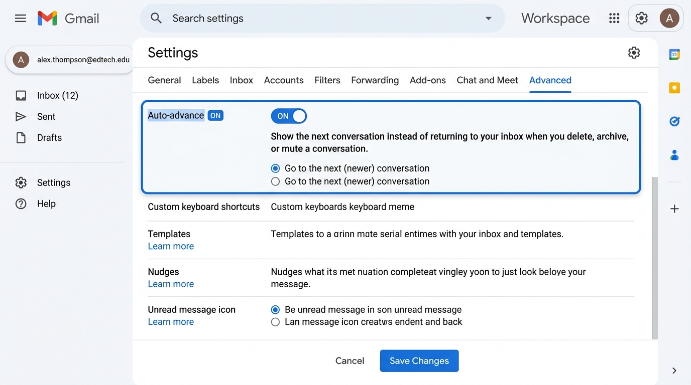
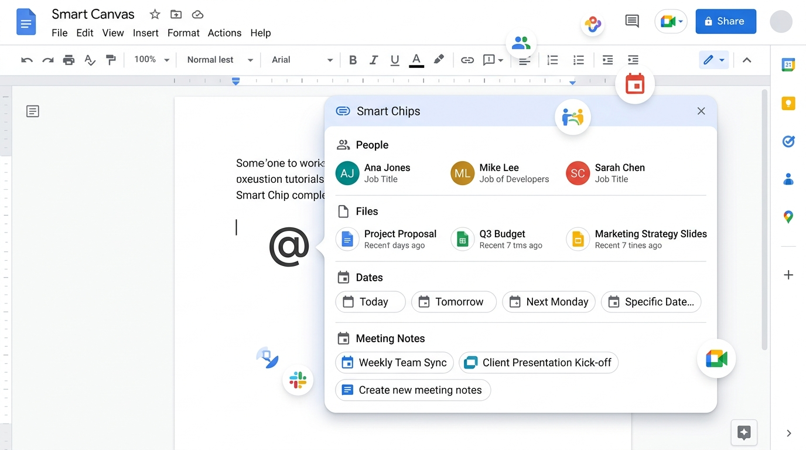
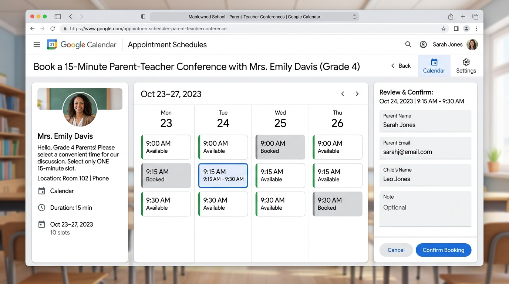
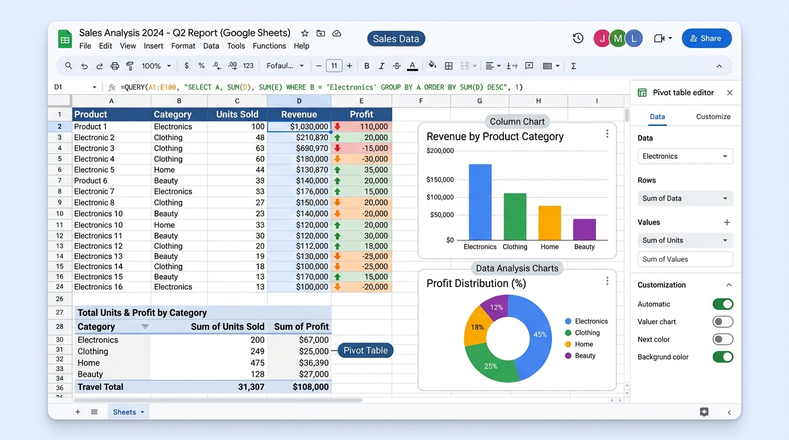
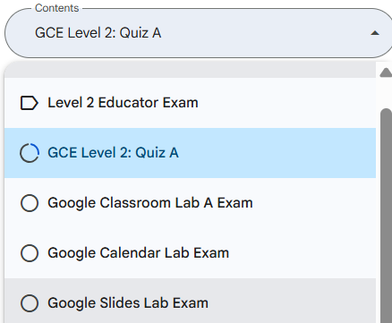

🧰 十篇工具講義
本研習以工具為主軸：一個工具的功能一次學完，不用在工具之間跳來跳去。 共 40 個實務演練，每則都有真實情境、可動手的練習環境與步驟清單。
點上方的 🗺️ 課程結構對照，可以看到官方繁中 11 個實務單元、英文 6 大 Units 與這十篇工具講義的三方對應——同一批內容的另一種組織方式。
🗺️ 課程結構對照
官方英文版是 6 Units / 18 Lessons（依能力領域分，考試大綱亦同）， 繁體中文版則是 11 個實務單元（依教學情境分）。兩套教的是同一批內容，只是切法不同。
開啟完整三方對照表 ➔內含：繁中 11 單元 → 對應英文 Unit → 要練哪幾個工具演練（可直接點進去），以及反向查詢表。
🌐 Google 官方中英文架構與關鍵考點術語意同對照 (Bilingual Alignment)
正式認證考試為英文/中英雙語題型，而 Google Teacher Center 提供繁體中文培訓頁面。以下為研習必考之核心專業術語與情境意同對照矩陣：
| 英文認證考綱術語 (English Exam Term) | 官方繁體中文術語 (zh-TW Official Term) | 對應講義與 11 單元意同對照 | 解題與應試關鍵 (Key Exam Focus) |
|---|---|---|---|
| Appointment schedule | 預約時間表 | Unit 2 / 第 4 單元 | 親師面談自動呈現空閒時段與網址 |
| Grant access to account | 授予您帳戶的存取權 (代理) | Unit 1 / 第 3 單元 | 團隊成員免密碼代表主管收發 Email |
| Paragraph styles (Headings) | 段落樣式 (標題1、標題2) | Unit 3 / 第 6 單元 | Docs 自動生成 Table of Contents 目錄 |
| Originality reports | 原創性比對報告 | Unit 3 / 第 9 單元 | Classroom 學生繳交前自主檢查抄襲 |
| Conditional Formatting | 條件式格式設定 | Unit 6 / 第 5 單元 | Sheets 根據分數表現自動變更格子顏色 |
| Quiz Assignment & Grade importing | 測驗作業 與 成績匯入 | Unit 3 / 第 11 單元 | Forms 測驗分數自動同步進入成績冊 |
| Smart Chips (@People / @Date) | 智慧晶片 (@人員 / @日期) | Unit 1 / 第 1 單元 | Docs 議程指派任務與設定截止日 |
| Join by phone | 透過電話撥號加入 | Unit 4 / 第 8 單元 | Meet 網路不穩定時之備援通話 |
| Marketplace Add-ons | Workspace Marketplace 外掛程式 | Unit 5 / 第 3 單元 | 在 Docs 給予非同步語音回饋 (Mote) |
| Hyperlink Slides to each other | 投影片互相建立超連結 | Unit 4 / 第 7 單元 | Slides 製作單字記憶卡與選擇板 |
自動化課堂與行政任務 (Automate classroom tasks)
1.1 Boost your efficiency in Gmail (提升 Gmail 郵件處理效率)
在繁重的教學與行政工作中，透過數位工具自動化流程能為教師省下寶貴時間。
一般情況下，刪除或封存郵件時系統會返回收件匣。啟用 「自動進階 (Auto-advance)」 後，系統會在刪除/封存目前郵件後，自動直接顯示下一封未讀郵件，大幅節省處理未讀信件的時間。
• 設定路徑：Gmail 設定 (齒輪) → 觀看所有設定 →「進階」分頁 → 啟用「自動進階 (Auto-advance)」。

from:parent.com 點選建立篩選器，可設定自動套用「家長來信」標籤並標示星號。1.3 Level up collaboration with smart canvas (智慧畫布與標籤)
在 Google Docs 或 Sheets 中輸入 @ 符號，可帶出人員標籤 (@姓名)、檔案預閱與會議紀錄範本 (@Meeting notes)。

📝 本單元官方認證真題對照與研習解題口訣
[中] 人員與檔案 (People and File)
[中] 檔案與日期 (File and Date)
[中] 日期與地點 (Date and Place)
[中] 人員與日期 (People and Date)
正確答案為：人員與日期 (People and Date)。使用 @姓名 指派負責學生，使用 @日期 設定任務截止日期。
[中] 個人字典 (Personal dictionary)
[中] 清除格式 (Clear formatting)
[中] 尋找與取代 (Find and replace)
[中] 比較文件 (Compare documents)
正確答案為：尋找與取代 (Find and replace / Ctrl+H)。能一鍵找出所有錯誤作者姓名並批次取代為正確姓名。
[中] 在會議結束時將會議紀錄下載為 PDF，並個別寄信給每位與會者
[中] 對會議紀錄進行截圖，並在 Google Meet 聊天室中分享
[中] 在 Google Docs 建立包含會議紀錄的文件，並將文件附加至行事曆邀請中供所有與會者查看與協作
[中] 使用 Google Docs 整理會議紀錄並散布發布的網頁連結
正確答案為：在 Google Docs 建立會議紀錄文件並將其附加至行事曆邀請中（或使用 Meeting Notes 智慧標籤），與會者皆可直接開啟協作。
[中] 要求團隊從他們自己的信箱發信並署名主管姓名
[中] 從撰寫視窗切換機密模式
[中] 使用「授予您帳戶的存取權 (Grant access to your account)」代理授權功能
[中] 使用快速設定中的優先收件匣功能
正確答案為：使用「授予您帳戶的存取權 (Grant access to your account)」代理授權。授權代理人閱讀與發信，發信時會標示「由 XXX 代理發送」。
與家長及監護人高效溝通 (Communicate with parents and guardians)
2.1 Google Forms 資料驗證 (Data Validation)
收集家長 Email 或電話時，在簡答題右下角點選「驗證回應 (Data Validation)」，設定強制格式為「電子郵件位址」，防止輸入錯誤無效格式。
2.3 Google Calendar 預約時間表 (Appointment Schedules)
自訂親師座談會或輔導時段（如 15 分鐘），開放家長線上預約，系統自動連動 Google Meet 連結與行事曆通知。

📝 本單元官方認證真題對照與研習解題口訣
[中] 將所有日期新增至共用的 Google 文件中
[中] 在每次活動前發送電子郵件提醒
[中] 在 Google Chat 群組中發送 Google Meet 連結
[中] 在 Google 行事曆中排定所有活動、邀請參與者並附加 Google Meet 視訊連結
正確答案為：在 Google 行事曆中排定所有活動、邀請參與者並附加 Google Meet。這樣能確保活動同步呈現於所有人的行事曆上，並提供一鍵加入 Meet 視訊的管道。
[中] 寄電子郵件給家長，並根據他們偏好的時間寄送個別活動邀請
[中] 建立活動並使用「尋找空檔」與家長開會
[中] 在行事曆邀請中新增地點
[中] 使用預約時間表 (Appointment schedule) 並將專屬 URL 連結發送給家長
正確答案為：使用預約時間表 (Appointment schedule) 並發送 URL 連結。當家長預約後，行事曆會自動扣除該時段並防重複預約。
[中] 設計一個共用的 Google 協作平台，每位老師編輯一個頁面
[中] 在 Google Classroom 中建立一個班級，並將所有老師新增為協同教師 (Co-teachers)
[中] 建立共用雲端硬碟資料夾並給予編輯權限
[中] 建立共用行事曆供老師新增活動
正確答案為：在 Google Classroom 建立班級並將所有老師新增為協同教師 (Co-teachers)。這樣能兼顧教材發布、學生管理與 Meet 線上會議。
[中] 字典 (Dictionary)
[中] 尋找與取代 (Find and replace)
[中] 翻譯文件 (Translate Document)
[中] 自動完成 (Autocomplete)
正確答案為：翻譯文件 (Translate Document / 工具 $ ightarrow$ 翻譯文件)。能將目前 Docs 一鍵複製並翻譯為指定語言的新文件。
系統化組織班級與教學素材 (Organize your class materials)
📝 本單元官方認證真題對照與研習解題口訣
[中] 建立一個 Google 協作平台 (Google Site)，並為每位學生提供一個頁面來分享他們的成果
[中] 建立一個 Google 協作平台，並內嵌 Google 行事曆顯示學生何時展示作品
[中] 為每位學生分別建立一個 Google 協作平台與全班分享成果
[中] 建立一個 Google 協作平台，並內嵌 Google 表單供學生提交作品
正確答案為：建立一個 Google 協作平台並為每位學生提供一個專屬子頁面。Google Sites 是最佳的整合平台，能內嵌 Docs、Slides 與 YouTube 影片。
[中] 項目符號與編號 (Bullets & numbering)
[中] 段落樣式 (Paragraph styles，如標題1、標題2)
[中] 頁碼 (Page numbers)
[中] 頁首與頁尾 (Headers & footers)
正確答案為：段落樣式 (Paragraph styles)。Google Docs 的目錄是自動根據段落樣式中的標題階層 (Headings) 產生的。
[中] 數據分析 (Analytics)
[中] 擴充功能 (Add-ons)
[中] 原創性比對報告 (Originality reports)
[中] 評分基準 (Rubrics)
正確答案為：原創性比對報告 (Originality reports)。開啟此功能後，學生在交作業前最多可進行 3 次自我比對，檢查引述與抄襲。
[中] 更多 (More)
[中] 發布 (Publish / 發布設定)
[中] 首頁 (Home)
[中] 設定 (Settings)
正確答案為：發布 (Publish)。點選「發布」旁的下拉箭頭或發布按鈕，可調整「已發布的網站」存取權限（如校內限定或公開）。
[中] 建立一般作業並將縮網址附加為連結
[中] 使用「成員」頁面寄信給每位學生表單連結
[中] 將表單 HTML 內嵌在訊息串頁面
[中] 建立「測驗作業 (Quiz Assignment)」並開啟「成績匯入 (Grade importing)」功能
正確答案為：建立「測驗作業 (Quiz Assignment)」並開啟「成績匯入 (Grade importing)」。這樣表單測驗得分會自動同步至成績冊。
[中] 已發布網站：公開 (Public)，文件：限制 (Restricted)
[中] 已發布網站：限制 (Restricted)，文件：限制 (Restricted)
[中] 已發布網站：公開 (Public / 已知連結者可檢視)，文件：發布至網路 (Publish to the web / 權限開放)
[中] 已發布網站：限制 (Restricted)，文件：發布至網路 (Publish to the web)
正確答案為：已發布網站設為 Public (公開)，內嵌文件亦需設為 Publish to the web (或開放權限)，確保校外大學審查人員能正常查看作品集。
打造互動式自主學習環境 (Create an interactive environment)
📝 本單元官方認證真題對照與研習解題口訣
[中] 透過電話加入 (Join by phone)
[中] 通話控制 (Call control)
[中] 雜訊消除 (Noise cancellation)
[中] 按鍵發聲 (Push to talk)
正確答案為：透過電話加入 (Join by phone)。當網路不穩定時，成員可撥打 Meet 專用電話號碼連入語音會議。
[中] 進入檔案功能表並選擇頁面設定
[中] 使用「插入 (Insert)」功能表並選擇為文字或物件建立連結
[中] 進入檔案功能表並選擇頁面設定
[中] 選擇擴充功能功能表並選擇外掛程式
[中] 在反白文字上按右鍵並選擇「連結 (Link)」
正確答案為：B (插入選單 $ ightarrow$ 超連結) 與 E (反白文字右鍵 $ ightarrow$ 連結)。這兩種方式皆能將多媒體超連結附加至簡報物件中。
[中] 直接在投影片上內嵌 YouTube 影片 (Embed a YouTube video)
[中] 向簡報的所有檢視者顯示協作指標
[中] 使用主題建構工具變更簡報外觀
[中] 對每張投影片套用不同的轉場效果
正確答案為：直接在投影片上內嵌 YouTube 影片 (Embed a YouTube video)。能在簡報播放時直接播放影音教學，大幅提升互動性。
[中] 客座講師可在 YouTube 上觀看影片並寄信討論
[中] 客座講師可直接從 Google Slides (簡報) 中發起 Meet 會議，對專案簡報給予回饋
[中] 教育工作者可以從 Google Docs (文件) 中快速加入 Google Meet 討論專案細節
[中] 透過雲端硬碟分享影片並要求信件回饋
[中] 在表單新增影片並要求客座講師提交回饋
正確答案為：B (直接從 Slides 發起 Meet) 與 C (直接從 Docs 快速加入 Meet)。Google Workspace 已將 Meet 整合至 Docs/Slides 工具列中。
[中] 讓學生自動播放簡報 (Auto-play Slides)
[中] 讓學生將投影片互相建立超連結 (Hyperlink Slides to each other)
[中] 讓學生在簡報中使用「編輯主題 (Edit theme)」
[中] 讓學生在簡報中使用字典 (Dictionary)
正確答案為：將投影片互相建立超連結 (Hyperlink Slides to each other)。點擊單字投影片按鈕跳轉至定義頁，定義頁按鈕跳回單字頁，實現記憶卡互動。
實施學生個人化與差異化學習 (Personalize student learning)
📝 本單元官方認證真題對照與研習解題口訣
[中] 從 Google Workspace Marketplace 搜尋並安裝擴充功能 (Add-on，如 Mote)
[中] 使用 Google Chat 發送訊息給學生
[中] 在 Google Classroom 中留下私人註解
[中] 使用 Google Calendar 建立會議邀請
正確答案為：從 Google Workspace Marketplace 搜尋擴充功能（例如 Mote 語音回饋擴充功能），可在 Docs 中直接錄製並留下口頭語音回饋。
[中] 匯入 (Import)
[中] 額外協助 / 提示資源 (Extra help)
[中] 技能 (Skills)
[中] 更多選項 (More options)
正確答案為：額外協助 (Extra help)。在 Practice sets 中，老師可為每題加入多達 10 個提示資源（影片、文字提示等）。
[中] 限制每個班級學生對雲端硬碟資料夾的存取權限以提高安全性
[中] 限制表單每位學生只能回覆一次以減少作弊
[中] 在 Google 文件表格中建立工具清單並新增超連結，引導學生自主探索概念
[中] 應用翻轉課堂 (Flipped Classroom) 模型，在表單中新增影片並針對特定內容提問
[中] 建立公開的雲端硬碟供學生列印作業
正確答案為：C (在文件表格中建立超連結引導探索) 與 D (翻轉課堂：Forms 嵌入影片並提問)。這兩者皆為個人化與自主探索教學實踐。
[中] 分享螢幕頂部的網址
[中] 為團隊成員列印一份練習題集紙本
[中] 開啟連結共用並複製連結 (Turn on link sharing and copy link) 給團隊成員
[中] 將團隊成員新增至他們的 Classroom 課程中
正確答案為：開啟連結共用並複製連結 (Turn on link sharing and copy link)。其他老師取得連結後即可檢視並複製該 Practice set 使用。
分析與解讀學生學習數據 (Analyze & interpret student data)
6.2 Google Sheets 高階數據函數與樞紐分析
使用 QUERY SQL 語法動態過濾不及格名單：
=QUERY(A1:E100, "SELECT A, B WHERE C < 60 AND E = '401' ORDER BY C ASC", 1)跨表連線使用 IMPORTRANGE，初次輸入必須點選「允許存取 (Allow Access)」：
=IMPORTRANGE("https://docs.google.com/spreadsheets/d/xxx", "工作表1!A1:D50")
📝 本單元官方認證真題對照與研習解題口訣
[中] 條件式格式設定 (Conditional Formatting)
[中] 自動完成 (Autocomplete)
[中] 樞紐分析表 (Pivot table)
[中] 資料擷取 (Data extraction)
正確答案為：條件式格式設定 (Conditional Formatting)。能根據分數條件（如小於 60 分顯示紅色背景）自動變更儲存格外觀。
[中] 直行統計資料 (Column stats)
[中] 資料清理 (Data cleanup)
[中] 資料擷取 (Data extraction)
[中] 時間軸 (Timeline)
[中] 樞紐分析表 (Pivot table)
正確答案為：A (Column stats 欄位統計) 與 E (Pivot table 樞紐分析表)。兩者皆能迅速計算重複文字項目的計數與比例。
📋 Google Certified Educator Level 2 官方報名 5 大步驟與控制台導覽
官方報名連結：https://educertifications.google/registration/2?lang=zh-TW
進行正式測驗時，若遇到翻譯較為彆扭的題目，點擊畫面右上角的 🌐 地球圖示即可彈出語系選單，隨時切換成 English 核對原版專有名詞，雙向切換不會影響答題時間與結果！

📚 官方考試兩大題型架構剖析：選擇題 (Quiz) + 實作題 (Lab Exams)
Google Certified Educator Level 2 考試包含「選擇題觀念測驗」與「實戰操作實驗測驗 (Lab Exams)」兩大部分：

• Classroom Lab：個別分組派發、測驗作業與成績匯入。
• Calendar Lab：預約時間表 (Appointment schedule) 設定。
• Slides Lab：選擇板 (Choice boards) 與隱藏投影片設定。
🖥️ GCE Launchpad 認證控制台介面導覽

點選「登入 / Sign In」，使用您常用且能正常收發郵件的個人或學校 Google 帳號登入。首次登入或報名時，系統會彈出 Confirm your eligibility (出生年月日資格驗證) 視窗：

在認證列表中找到 Level 2 項目點選報名，並選擇試題語言為「繁體中文」或「英文」。
若研習有發放免費兌換碼，在 Promotion Code 欄位輸入並點選 Apply。若無兌換碼，請輸入信用卡資訊支付 免費 $0報名費。
報名或兌換成功後，畫面會顯示：「您已報名教育家第 2 級測驗」！

在 Launchpad 點選「Continue Exams」即可看到您已準備就緒的測驗卡片：

點擊「參加測驗」後即可跳轉開通 180 分鐘正式試題畫面（GCE 第 2 級：測驗 A）：

• 第一次未通過：需等待 14 天方可再次付費補考。
• 第二次未通過：需等待 60 天方可補考。
• 第三次未通過：需等待 1 年方可補考。
⚡ 考前 15 分鐘速記重點對照表
• Docs/Sheets 輸入
@ 帶出人員標籤與會議紀錄：Smart Canvas• Forms 防止家長輸入無效 Email：回應驗證 (Data Validation)
• Sites 隱藏草稿頁面：在導覽列中隱藏 (Hide from navigation)
• Slides 即時聽眾提問與投票：觀眾工具 (Audience Q&A)
• Forms 適應性測驗：根據回應跳轉至指定區段 (僅單選/下拉支援)
• 跨表連線授權：=IMPORTRANGE() 點選「允許存取 (Allow Access)」
🔗 Google Teacher Center 官方 18 個 Lessons 連結庫
本講義完全對照以下官方連結，點擊即可直達 Teacher Center 各子單元：
- 課程總主頁：Intermediate use of Google Workspace for Education Fundamentals 官方主頁
- 官方報名網址：Google Certified Educator Level 2 官方線上報名入口
- 【Unit 1: 自動化課堂與行政任務】
- • Lesson 1.1 (Gmail Auto-advance): Boost your efficiency in Gmail (3306618)
- • Lesson 1.2 (Add-ons): Explore add-ons in Google Workspace (3306619)
- • Lesson 1.3 (Smart Canvas): Level up collaboration with smart canvas (3306620)
- 【Unit 2: 與家長及監護人高效溝通】
- • Lesson 2.1 (Forms Data Validation): Organize guardian Information with Google Forms (3306622)
- • Lesson 2.2 (Communication Systems): Create a communication system with Google tools (3306623)
- • Lesson 2.3 (Appointment Schedules): Manage meetings with Google Workspace (3306624)
- 【Unit 3: 系統化組織班級與教學素材】
- • Lesson 3.1 (Docs Syllabus & Bookmarks): Create a digital syllabus in Google Docs (3306626)
- • Lesson 3.2 (Sites Digital Portfolios): Create digital portfolios with Drive and Sites (3306627)
- 【Unit 4: 打造互動式自主學習環境】
- • Lesson 4.1 (Slides Choice Boards & Q&A): Deliver interactive presentations with Slides (3306629)
- • Lesson 4.2 (Meet Breakout Rooms): Use Google Meet to Connect to the World (3306630)
- 【Unit 5: 實施學生個人化與差異化學習】
- • Lesson 5.1 (Personalization Options): Share personalization options using Workspace (3306632)
- • Lesson 5.2 (Visualize Learning): Visualize learning using Google Workspace (3306633)
- • Lesson 5.3 (Publish Work & Blogger): Publish work online using Google tools (3306634)
- • Lesson 5.4 (Teaching Best Practice): Teaching and learning best practice (3306635)
- 【Unit 6: 分析與解讀學生學習數據】
- • Lesson 6.1 (Formative Assessments): Deliver formative assessments with Classroom (3306637)
- • Lesson 6.2 (Visualize Results): Visualize student results with Google Sheets (3306638)
- • Lesson 6.3 (Sheets QUERY & IMPORTRANGE): Analyze data in Google Sheets (3306639)
- 【隨堂總評量測驗】
- • End of Course Assessment: Test your knowledge in the Intermediate use (3306641)